11 Global minimization
\[p(\vb m|\vb d) = \frac{p(\vb d|\vb m)p(\vb m)}{p(\vb d)}\]
- \(p(\vb m|\vb d)\) - posterior probability that model \(\vb m\) is responsible for data
- \(p(\vb d|\vb m)\) - (theoretically) likelihood that \(\vb m\) is capable to generate \(d\)
- \(p(\vb m)\) - probability that model \(\vb m\) is the actual model
- \(p(\vb d)\) - probability of observing \(\vb d\) amongst all possible
11.1 Data-model dependence

A: a priori pdf \(p_a(\vb m, \vb d)\), B: conditional pdf \(p_g(\vb m, \vb d)\), C: product \(p_t(\vb m, \vb d)=p_a(\vb m, \vb d) p_g(\vb m, \vb d)\), white: theory
11.2 Model space
Bayes theorem provides another view on geophysical inversion
- trade-off between data fit (white curve) and model assumptions (color)
- represented by data errors and regularization terms/strength

11.3 Application to constrained inversion
Gaussian likelihood function (data misfit)
\[ p(\vb d|\vb m)=\frac{1}{(2\pi)^P |D^{-1}|} \exp\left(-\frac12 \delta \vb d \vb D^T \vb D \delta \vb d\right) \]
Prior probability function (smoothness of the model)
\[ p(\vb m)=\left(\frac{\lambda}{2\pi}\right)^{(N-1)/2} \exp(-\frac{\lambda}{2} \vb m^T \vb C^T \vb C \vb m) \]
11.4 Smoothness

11.5 Slightly wrong a-priori information

12 Global inversion algorithms
- probabilistic background and with randomness
- good for finding global minima of objective function
- many forward runs needed (only applicable for fast \(f(m)\))
- typical for small parameter sizes like curve fitting, 1D inversion
12.1 Monte Carlo methods
- Monte Carlos search: randomly draw solutions from grid
- accept solution if better than old
- Markow chain \[\{\vb m^0, \vb m^1, \ldots\}\]
- \(\vb m^{k+1}\) depends only on \(\vb m^k\)
- Metropolis-Hastings (Metropolis et al., 1953; Hastings, 1970)
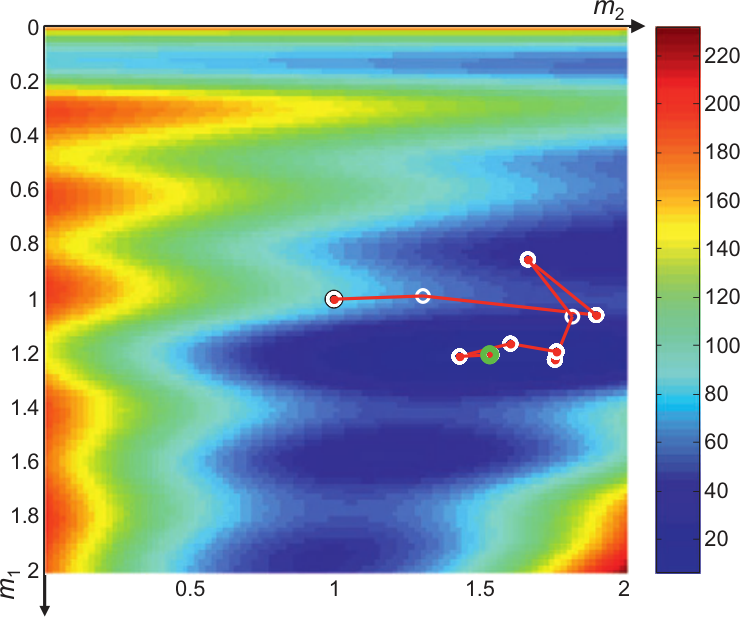
12.2 Metropolis-Hastings algorithm
Markov chain \(P(X_{t+1}|X_1,\ldots,X_t)=P(X_{t+1}|P(X_t))\)
draw candidate \(Y\) from proposal distribution \(q(X_t, Y)\) with probability
\[\alpha(X_t,Y)=\min \qty[ \frac{p(Y)q(Y,X_t)}{p(X_t)q(X_t,Y)} , 1 ]\]
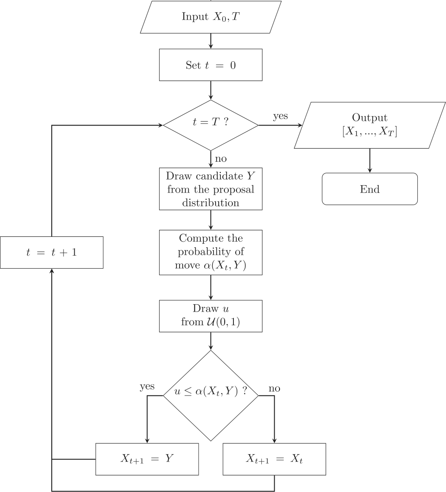
12.3 Metropolis-Hastings algorithm
- Burn-in phase: random walker is methodically guided toward the region of most probable method
- Drawing of a candidate \(\vb m'\) from a pdf \(q(\vb m|\vb m')\) that approximates the posterior pdf (e.g., a Gaussian around the current state \(\vb m\))
- add candidate \(\vb m'\) to Markov chain with acceptance probability \[\alpha=\min(1,w) \qqtext{with} w = \frac{p(\vb m')*q(\vb m|\vb m')}{p(\vb m)*q(\vb m'|\vb m)}\] using a random variable \(u\) in the interval [0, 1] \(\Rightarrow\) accept if \(u>w\)
12.4 Key components
- Proposal Distribution (\(q\)): Crucial for efficiency. A good proposal distribution explores the space well without being rejected too often.
- Acceptance Rate: Good value (20-50%) indicates balance between exploration & exploitation. Too low = slow. Too high = stuck locally.
- Burn-in Period: The initial samples often discarded because the chain hasn’t converged to the stationary distribution yet.
- Thinning: To reduce autocorrelation between samples, you can keep only every nth sample.
- Convergence Diagnostics: Check if chain has actually converged to the target distribution. (e.g., Gelman-Rubin statistic, trace plots).
12.5 Trace plots
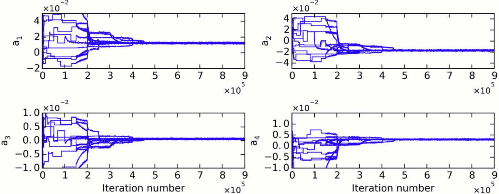
12.6 Corner plots
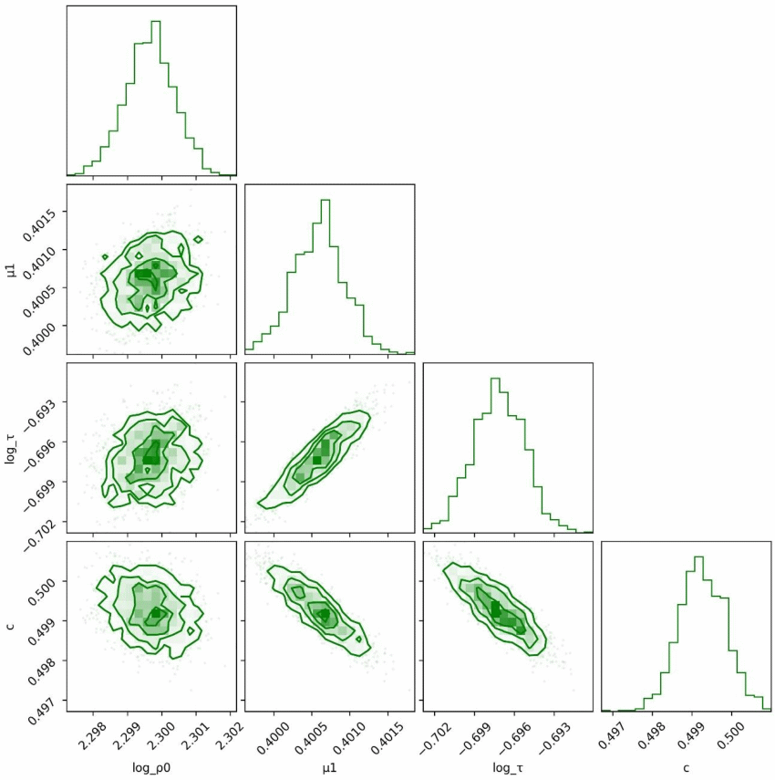
(Roudsari et al., in rev.)
- statistics of models
- correlation of parameters
- uncertainty of the results
12.7
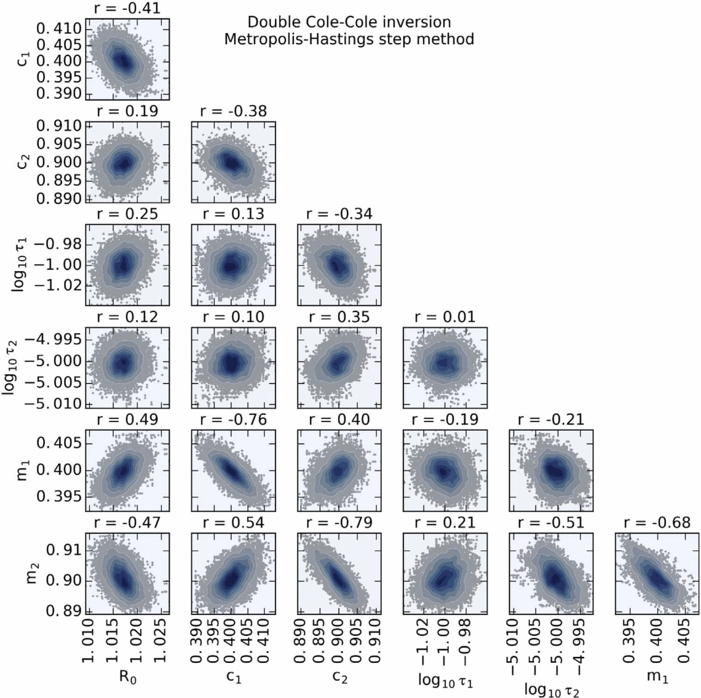
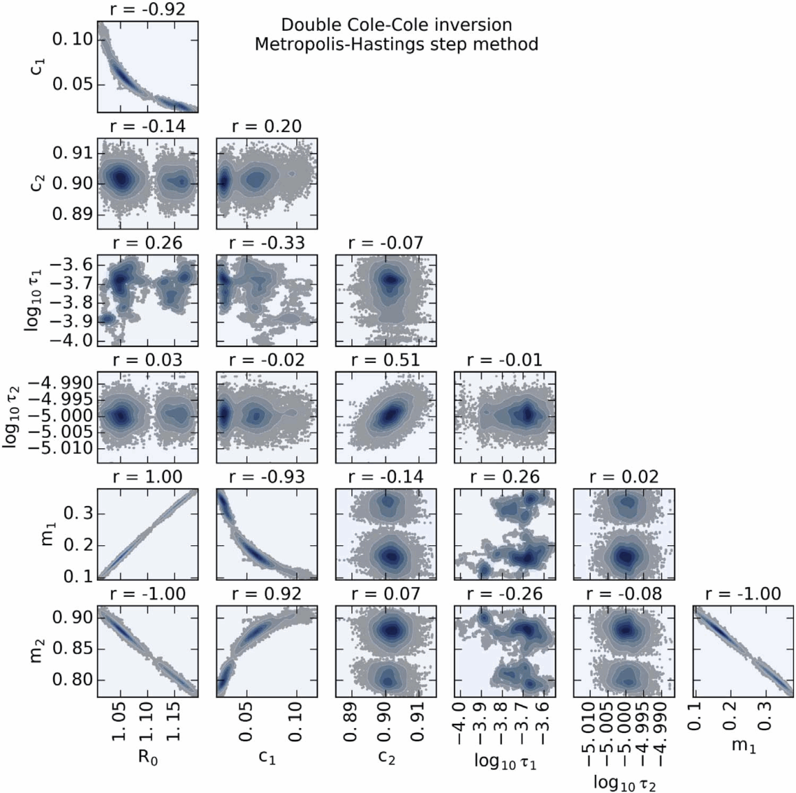
12.8 Model variance
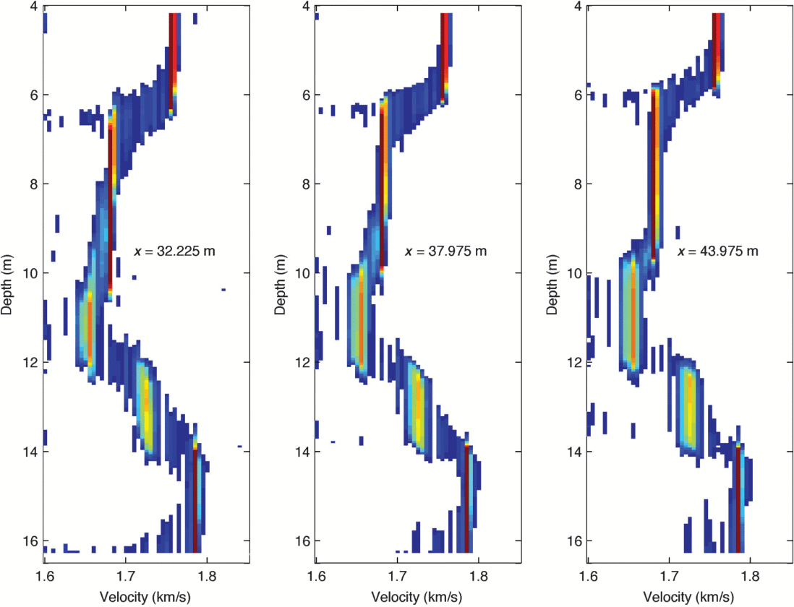
- derivation of mean values and standard deviations
- statistic simulations
(Tronicke et al., 2012)
12.9 Application to 2D ERT/IP inversion
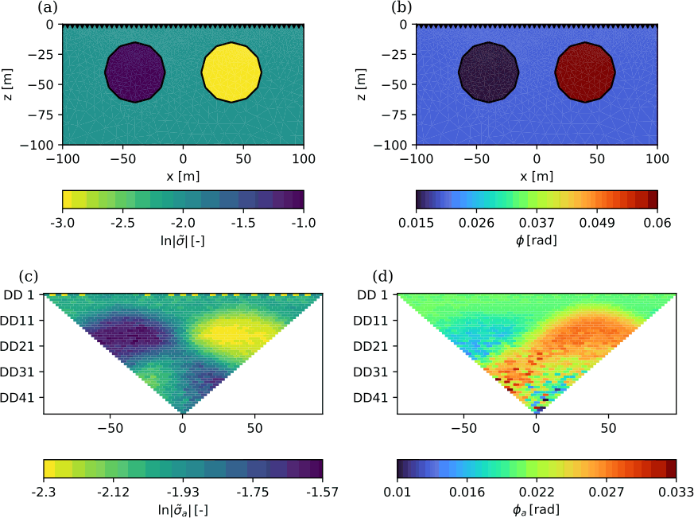
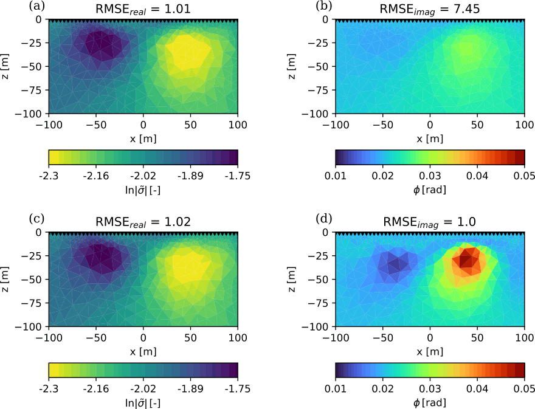
12.10 Simulated Annealing
Gibbs (Boltzmann) sampling \[ P(E) = e^{-\frac{E}{k_B T}} = e^{-(\Phi(\vb m)-\Phi(\vb m^p))/T} \]
- draw models neighboring best fit
- large movements if far from target fit
- small if approaching target
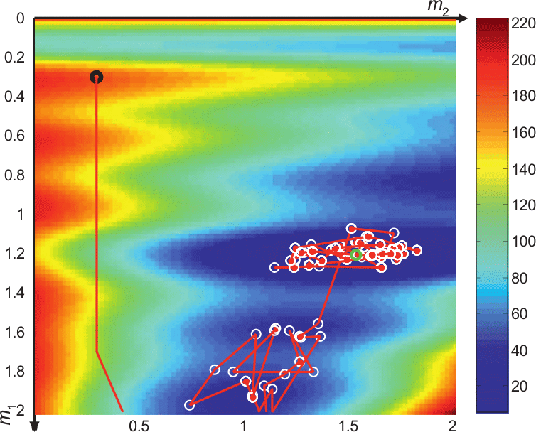
12.11 Bio-inspired global search methods
- Genetic Algorithm
- Evolution Strategy
- Differential Evolution Algorithm
- Estimation of Distribution Algorithm
- Particle Swarm Optimization
- Ant Colony Optimization
- Pareto Archived Evolution Strategy (PAES)
- Nondominated Sorting Genetic Algorithm (NSGA-II)
12.12 Genetic algorithms
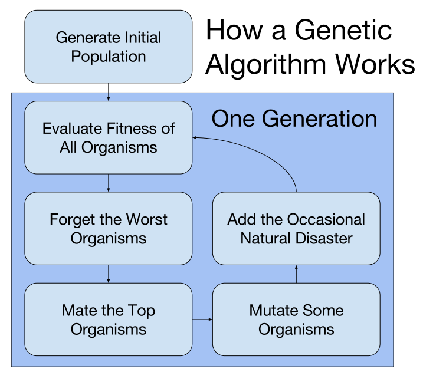
- inspired by evolution of species (survival of the fittest)
- code models in a binary (DNA) sequence
- randomly generate initial population
- let the fittest (data fit!) survive & mate and the unfittest die
- mutation of the DNA to create variability
12.13 Nondominated Sorting Genetic Algorithm
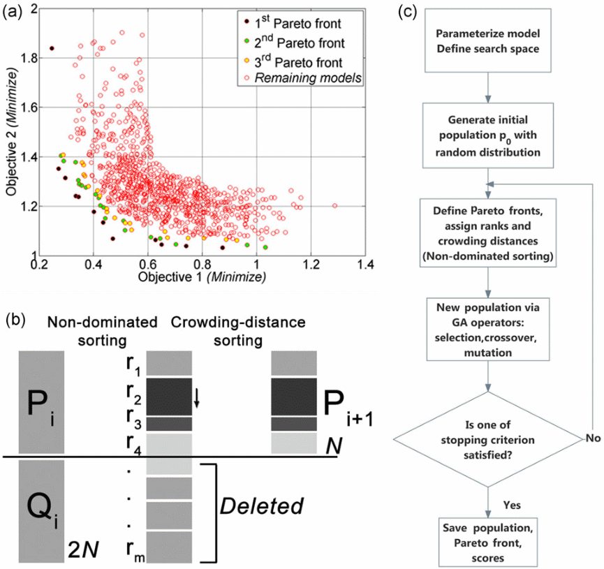
- minimization of two objective functions
- two geophysical methods
- data misfit and model roughness
- Pareto front: all non-dominated individuals
- sort Pareto rank and play god
12.14 Particle swarm optimization
- movements of individuals in swarm (impulse & attraction)
- individual position (\(\vb m\)) & velocity
- distribute population over range
- acceleration from attraction
- move with velocity
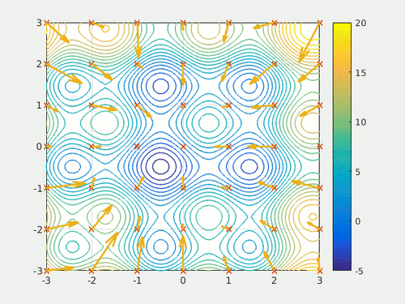
12.15 Summary
global (probabilistic) inversion methods
- can overcome local minimum problems
- also find a trade-off between data fit and model assumptions
- find a variety of models fitting the data
- can therefore show correlation and model uncertainty
- only applicable to “small” problems (increasingly simple 2D)
- well suited as supplement to local methods